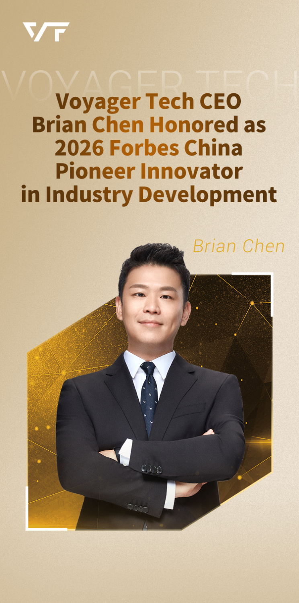

On March 18, Brian Chen, Founder & CEO of Voyager Tech, has been honored with the 2026 Forbes China Pioneer Innovator in Industry Development Award, jointly presented by Forbes China and Frost & Sullivan, a globally renowned growth consulting firm. Focusing on key sectors including AI, mass consumption, healthcare, new energy, manufacturing and services, the award aims to recognize enterprises, brands and individuals that drive growth through innovation and propel industry progress with long-termism in a complex environment.

This accolade is not only an authoritative recognition of Brian's exceptional leadership and remarkable contributions to the industry, but also a testament that Voyager Tech's innovative strength in the smart assisted driving and smart cockpit sectors has earned wide recognition from the mainstream market and professional institutions!


At the grand ceremony, Gabriel Lu, Service Line Leader Partner and Managing Director of Frost & Sullivan China, and Michael Guo, General Manager of Business Operations, Forbes China Group, presented the award to Brian Chen, Founder and CEO of Voyager Tech.
Dr. Neil Wang, Global Partner, Co-Chairman of Asia Pacific, and Chairman of China, Frost & Sullivan, delivered a speech at the ceremony. He noted that this year’s Pioneer Innovators demonstrate a remarkable global vision, stating that u201Cgoing global has evolved from an option to a necessity.u201D He elaborated on the profound meaning of u201CPioneer Innovatoru201D:u201CPioneeru201D stands for leadership, vanguard and guidance. A true pioneer innovator should possess three core traits: a pacesetter in technological or model innovation, a creator of industrial value, and a practitioner of long-termism. Meanwhile, three capabilities are essential: a global vision, technological insight, and long-term strategic resolve.
Dr. Wang emphasized that enterprises that continuously create industrial value will eventually gain market recognition, and explorers committed to long-termism will ultimately become leaders of the era.
 At the Ceremony
At the Ceremony
Left: Michael Guo, General Manager of Business Operations, Forbes China Group
Middle: Brian Chen, Founder & CEO, Voyager Tech
Right: Gabriel Lu, Service Line Leader Partner and Managing Director of Frost & Sullivan China
 Award Ceremony
Award Ceremony
Left: Gabriel Lu, Service Line Leader Partner and Managing Director of Frost & Sullivan China
Middle: Brian Chen, Founder & CEO, Voyager Tech
Right: Graham Earnshaw, Chief Strategy Officer of Forbes China Group

Dr. Neil Wang, Global Partner, Co-Chairman of Asia Pacific, and Chairman of China, Frost & Sullivan
Graham Earnshaw, Chief Strategy Officer of Forbes China Group, addressed the audience. He stated that the global economy and industries are undergoing profound transformation, with breakthroughs emerging in artificial intelligence, advanced manufacturing, new energy, biotechnology and other sectors, and the integration of digital technologies and the real economy deepening steadily.
He pointed out that maintaining innovation vitality amid uncertainty and achieving sustainable development amid competition have become critical priorities for enterprises and industries. The selection not only focuses on corporate achievements but more importantly on their leading role in driving technological progress, industrial upgrading and business model innovation. Forbes China hopes to showcase representative innovative practices across China’s industries, build a cross-industry exchange platform, and enable more outstanding innovators to be seen and recognized.

Graham Earnshaw, Chief Strategy Officer of Forbes China Group, delivering a speech